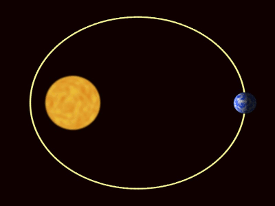

Jaar
Tropisch jaar

De tijd waarin de aarde een omloop rond de zon volbreng, noemen we het tropisch jaar.
Dat is de tijd die verloopt van bijvoorbeeld de start van de lente tot start van de volgende lente.
De lengte van een tropisch jaar is iets minder dan 365,25 dagen.
Welk Jaar?
Om aan te geven in welk jaar een bepaalde gebeurtenis heeft plaatsgevonden,
is het handig om een bepaalde vorm van jaartelling te hanteren.
Wanneer nieuw jaar?
Wij vinden het gewoon om het jaarcijfer te wisselen met de omgang van 31 december naar 1 januari.
Er zijn echter ook andere jaarstijlen geweest.